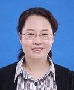

| General Chairs | |||
|
Sos Agaian City University of New York, New York, USA |
Xiaohui Yuan University of North Texas, Denton, USA |
||
|
Program Committee Chairs | |||
|
Xiaohui Yuan University of North Texas, Denton, USA |
 Mohamed Elhoseny Sharjah University, Sharjah, UAE |
||
|
Publication Chairs | |||
|
Baofu Fang Hefei University of Technology, Hefei, China |
|||
|
Outreach Chairs | |||
 Yu Liang Univ. of Tennessee at Chattanooga, Chattanooga, USA |
Tian Chen Hefei University of Technology, Hefei, China |
||
|
Finance and Local Organization Chairs | |||
 Yuqi Fan Hefei University of Technology, Hefei, China |
 Runmei Zhang Anhui Jianzhu University, Hefei, China |
||
Technical Program Committee
Ahmed abdelaziz, Nova ims universdade nova de Lisboa
Alfredo Cuzzocrea, ICAR-CNR and University of Calabria
Alireza Souri, Halic University
Amar Man Maharjan, University of North Texas
Amit Singh, NIT Patna
Anand Jatti , R V College of Engineering
Angelin Gladston, Anna Univeristy
Anurag Tiwari, University of petroleaum and energy studies
Arokia Renjit J, Jeppiaar Engineering College
Asif Baba, Tuskegee University
Bagi Rathi, Pondicherry Engineering College
bharani kumar, Bannari Amman Institute of Technology
Bhushan Patil, Rajiv Gandhi institute of technology
Bouarara Hadj Ahmed, GeCoDe
Chenlin Miao, University of Georgia
Dana Petcu, West University of Timisoara
Danda B. Rawat, Howard University
Deepa James, Anna University
Deepa Prabaharan, Government College of Technology
Dengchao Feng, North China Institute of Aerospace Engineering
Deze Zeng, The University of Aizu
Dharma Lingam, Nandha Arts and Science College
Durai raj, Dhanalakshmi Srinivasan Engineering College
Fang Fang, Hefei University of Technology
Farooq Aftab, University of Science and Technology Beijing
Francesca Lonetti, CNR-ISTI
Ganesh Narasimhan, Anna University
Geetha Angappan, Annamalai University
Geetha Mohan, Anna University
gomathi selvakumaran, University College of Engineering Dindigul
Hejun Wu, Sun Yat-sen University
Hua Li, Taiyuan University of Technology
Iraklis Varlamis, Department of Informatics and Telematics, Harokopio University of Athens
Jasper C, Anna University
Jayakumar C , Sri Venkateswara College of Engineering
Jianguo Liu, University of North Texas
Jianxiao Liu, Taiyuan University of Technology
Jinhai Xiang, Huazhong Agricultural University
Jinoh Kim, Texas A&M Univ.
kamatchi kannan , Bannari Amman Institute of Technology
Li Huafeng, Kunming University of Science and Technology
Liang Zhao, Central China Normal University
Lin Zhou, China University of Geosciences
Liyao Zhu, Hangzhou Dianzi University in China
Luz Abril Torres-Mendez, Centro de Investigacion y de Estudios Avanzados del IPN - Unidad
Saltillo
Madhan Mohan , Annamalai University
Mahmoud M. Selim, Prince Sattam bin Abdulaziz University
Mangesh M. Ghonge, Sandip Institute of Technology and Research Center
Manisha Vohra, Rajiv Gandhi Institute of Technology
Manivannan Karunakaran, PSNA College of Engineering and Technology
Manuel Cardona, Universidad Don Bosco
Mary Anita Rajam, Anna University
Massimo Mecella, Sapienza University of Rome
Meenakshi P, Visvesavaraya Technological University
Mohamed Abouelenien, University of Michigan-Dearborn
Mohamed Elhoseny, Mansoura University, Egypt
Mohammed k. Hassan, Horus university in Egypt
Mohan Kumar, Jeppiaar SRR Engineering College
Mohan Selvarajan, Annamalai University
Narinder Kumar Bhasin, Amity University
Peng Zhang, Stony Brook University
Pengcheng Zhang, College of Computer and Information, Hohai University
Ponnalagu Nagarajan, Bits Pilani Hyderabad Campus
Pradeep Kumar Singh, JayPee University of Information Technology
Pyingkodi M., Kongu Engineering College
Qiang Chen, Hefei University of Technology
Qing Yang, University of North Texas
Ravi Subban, Pondicherry University
Reem Atassi, American University in the Emirates
Rui Fang, University of Shanghai for Science and Technology
Sakthivel Periyasamy, Anna University
Sami nathan, Annamalai University
Samydurai Arumugam, SRM Valliammai Engineering College
Selvaradjou KA, Pondicherry Engineering College
Seng Loke, La Trobe University
Shankar K, Kalasalingam University
Shigeng Zhang, Central South University
Shiny Irene D, Saveetha School of Engineering
Siba K. Udgata, University of Hyderabad
Siobhan Clarke, Trinity College Dublin
Sivakumar N, Pondicherry Engineering College
sudha suresh, Easwari Engineering College
Sumithra MG, Anna University
Sundeep Narravula, Electronic Arts
Surapong Auwatanamongkol, National Institute of Development Administration
Tamilselvan Sadasivam, Pondicherry Engineering College
Thippa Reddy Gadekallu, Vellore Institute of Technology
Traian Marius, Truta Northern Kentucky University
Wenchen Wang, Weifang University
Xiao Liu, Deakin University
Xiaojing Wu, Weifang University
Xiaoliang Wang, Virginia State University
Xiaoliang Zhu, Central China Normal University
Xuan Guo, University of North Texas
Xuegong Qiao, Taiyuan Uinversity of Technology
Yantao Li, Chongqing University
Yiming Tang, Hefei University of Technology
Yingying Li, Anhui Jianzhu University
Zehua Chen, Taiyuan Uinversity of Technology
Zejun Zuo, China University of Geosciences
Zhengzheng Zhao, Taiyuan Uinversity of Technology